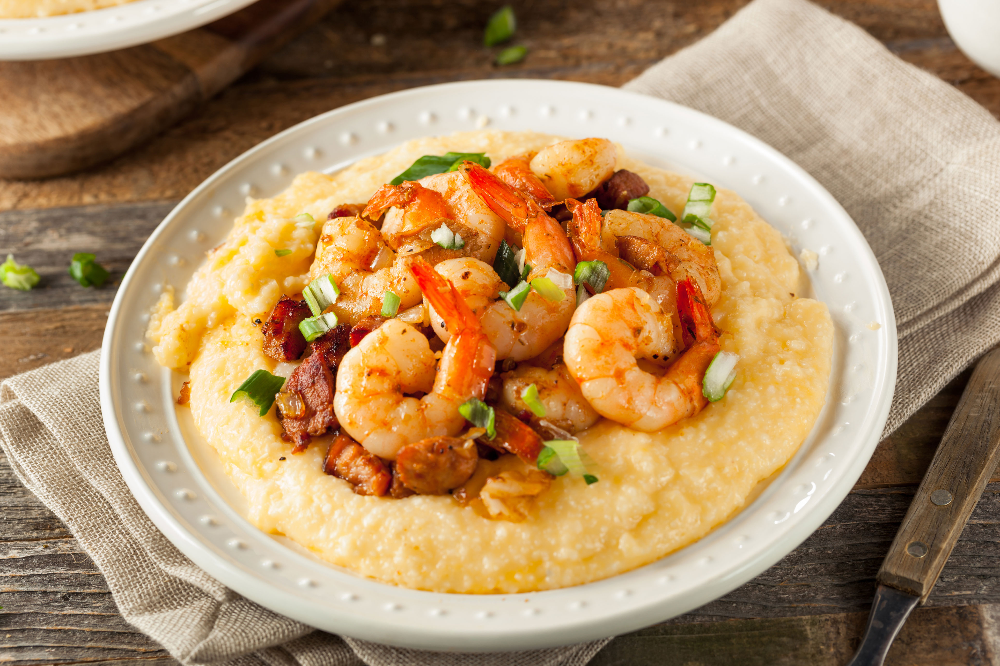

Shrimp and Grits

Description
Shrimp and grits is a traditional dish in the Lowcountry of the coastal
Carolinas and Georgia in the United States. It is a traditional breakfast
dish, though many consider it more of a lunch or supper dish. Elsewhere,
grits are accompanied by fried catfish or salmon croquettes.
Ingredients
- 2 cups reduced-sodium chicken broth
- 2 cups 2% milk
- 1/2 cup butter, cubed
- 1/2 teaspoon salt
- 3/4 cup uncooked old-fashioned grits
- 1 cup shredded cheddar cheese
- 8 thick-sliced bacon strips, chopped
- 1 pound uncooked medium shrimp, peeled and deveined
- 3 garlic cloves, minced
- 1 teaspoon Cajun or blackened seasoning
- 4 green onions, chopped
Steps
-
In a large saucepan, bring the broth, milk, butter, salt and pepper to a
boil. Slowly stir in grits. Reduce heat. Cover and cook for 15-20
minutes or until thickened, stirring occasionally. Stir in cheese until
melted. Set aside and keep warm.
-
In a large skillet, cook bacon over medium heat until crisp. Remove to
paper towels with a slotted spoon; drain, reserving 4 teaspoons
drippings. Saute the shrimp, garlic and seasoning in drippings until
shrimp turn pink. Stir in reserved bacon; heat through. Serve with grits
and sprinkle with onions.